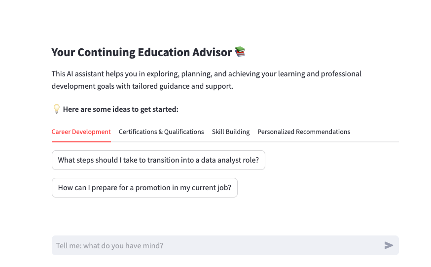

Reflecting on 2024, A Year of Tools in LLM Application Development
2024 has been a transformative year for many within the broader developer community. I have been amazed by the growth and democratization of application development tools for language models. They’ve made models more accessible and enabled the creation of apps and agentic workflows. This means, barriers to the developers’ community are fading away and it doesn’t take one to be a software engineer to prototype and test a toy product, before handing over things to a real developer to make a product out of it. The increasing depth and breadth of the application development space call for a more structured approach to using and maintaining these tools. Topics like AI product management have become crucial.
But at the same time, it doesn’t take one to be a pro hacker to scam or harm others. It’s alarmingly easy to clone a voice or face, making topics like AI security, governance, and ethics more critical than ever. So, overall and as with other tech growth periods, there has been a massive growth in both opportunities and risks, but this time in a more democratized, accessible and super fast moving way. By the way, our colleagues at EPFL had recently organized and delivered a successful 3-day course on AI product management which I hope we will see more of in the future. Language models also contirbute to their own consumption and development (e.g. via Copilot), making it easier for non-developers to benefit from developer tools and speculate on their ideas before getting too much into the technical details.
Privacy Challenges in LLM Applications
Some of the tools that I have been using or playing with this year are Langchain, Langflow, AnythingLLM, Llamaindex, OpenWebUI, Ollama, and Gradio. I started with a RAG powered chatbot that can interact with my personal webpage. I used GPT-4o-mini and a cheap and small embedding model from OpenAI (more on their embeddings here). Both can be replaced with any other LangChain-supported options. The cool part was the metadata that you can collect and trace with Langsmith e.g. latency, token usage, costs per request, request and its augmented part. I used then Gradio for the UI which was easy to learn and code at no time, but needs internet connection to work!
When brainstorming other potential toy applications, privacy concerns often emerged as a significant hurdle. You may want to build systems that don’t need an API or an internet connection. I was thinking about a chatbot that has my voice cloned and is available to my family so that they can get updates on me at any time during the day, times that I’m unavailable due to time zone differences; or a chatbot that can help me to take an emergency medical action in a trip where I have no internet connection; one that can help me with the home admins, e.g. all insurances, bills, my consumption behaviour, etc, or one that can help me on basic health related questions.
Common to these ideas are locally stored data and sensitive prompts. I have already tried them or a version of them, which made me aware of the potential challenges and compromises. Running a smart model locally demands substantial computational resources, and lighter models may lack the sophistication required for more complex tasks. Fine-tuning models for specific needs requires machine power, often leading back to cloud services and, consequently, privacy concerns. Another challenge lies in building efficient RAG systems which require smart models and embeddings, resources that are not always feasible to run locally.
My Toy App for Education
The following screenshot showcases a chatbot app I created to act as a Continuing Education Advisor 📚. It helps users consider and decide on their education goals and paths. The assistant supports multiple languages and works on various devices.

While this is more of a curiosity-driven prototype than a polished product, it highlights the potential of these tools. Here are the ingredients:
The base model is a light llama 3.2. While I initially used a local instance, it struggled with inference times for complex tasks and maxed out my CPU cores, impacting other processes. I eventually moved to GrogCloud’s free tier for better performance on concurrent requests. All the admin part is done locally via OpenWebUI container in Docker. The UI is a native of Streamlit that ChatGpt and Claude kindly provided its code to me after some discussions.For now, I’ve used Ngrok to provide a public URL, thanks to their free tier. I hope I can keep working on this project and make it more practical for real-world use cases.
The year 2024 has been a remarkable period of experimentation in LLM application development for many within the broader developer community. I’m excited to see what the next year holds for this fast-evolving space.